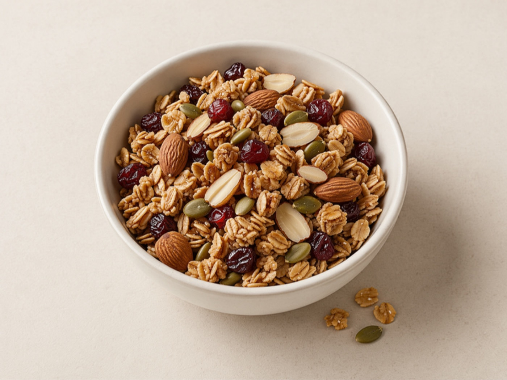
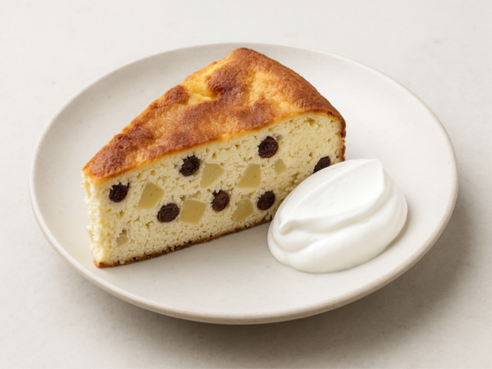
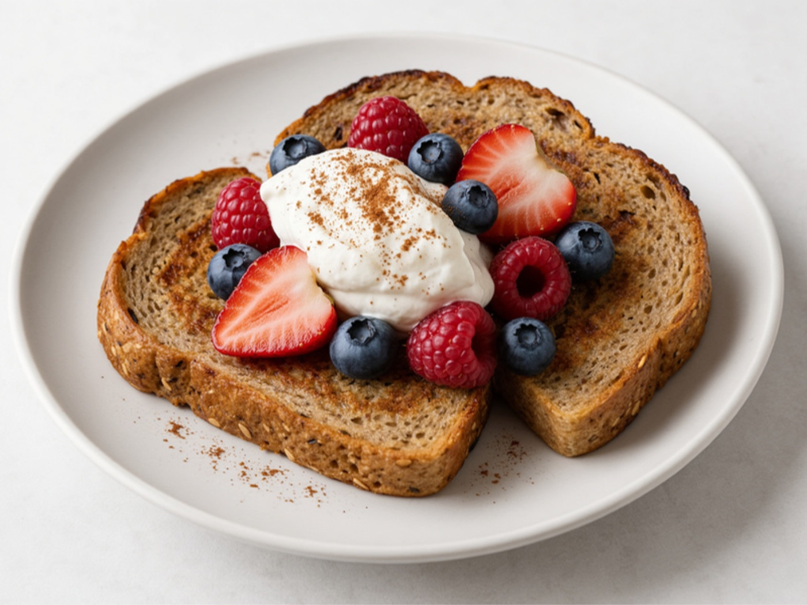
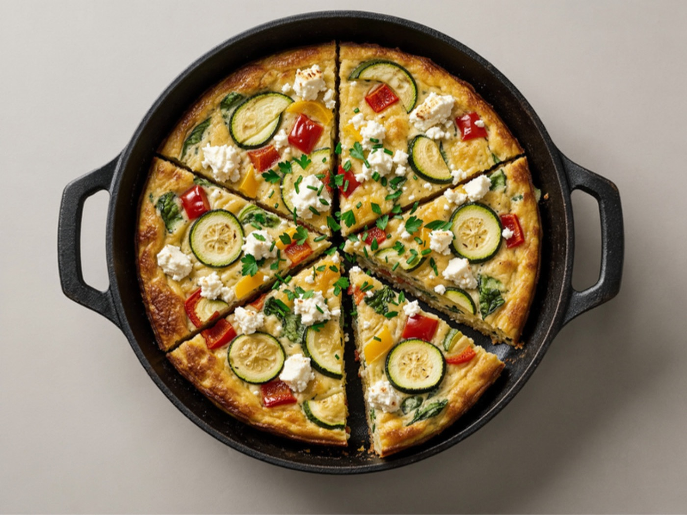
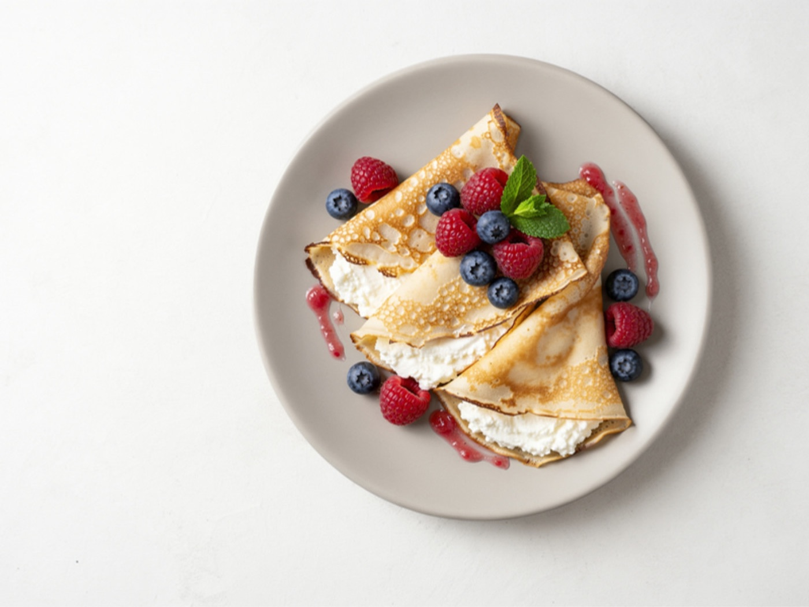
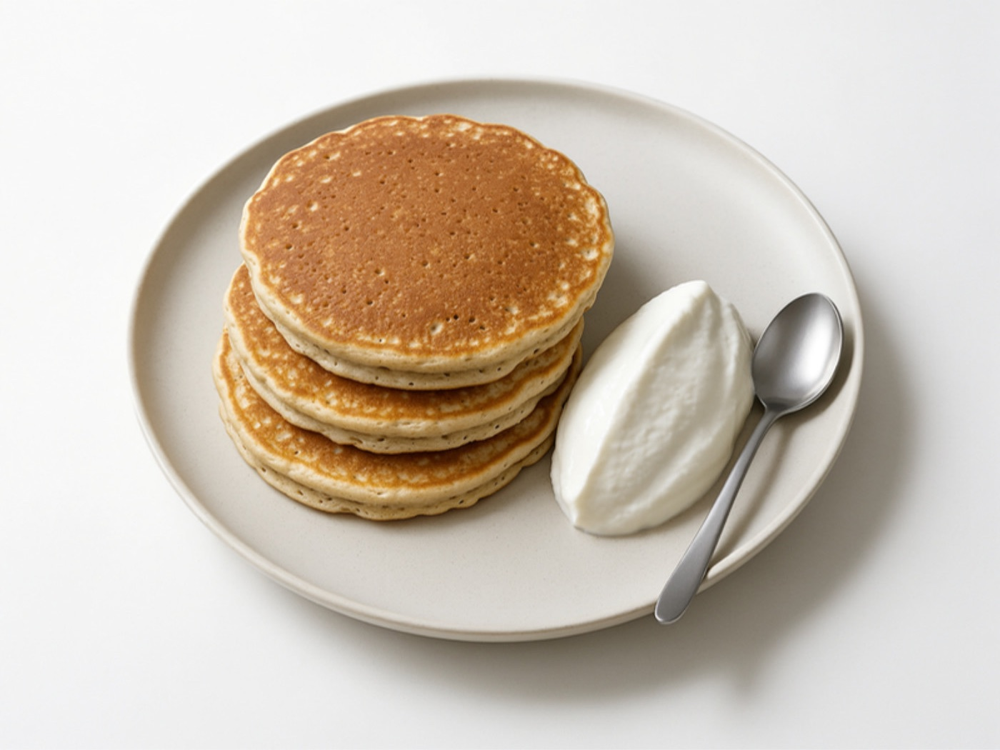
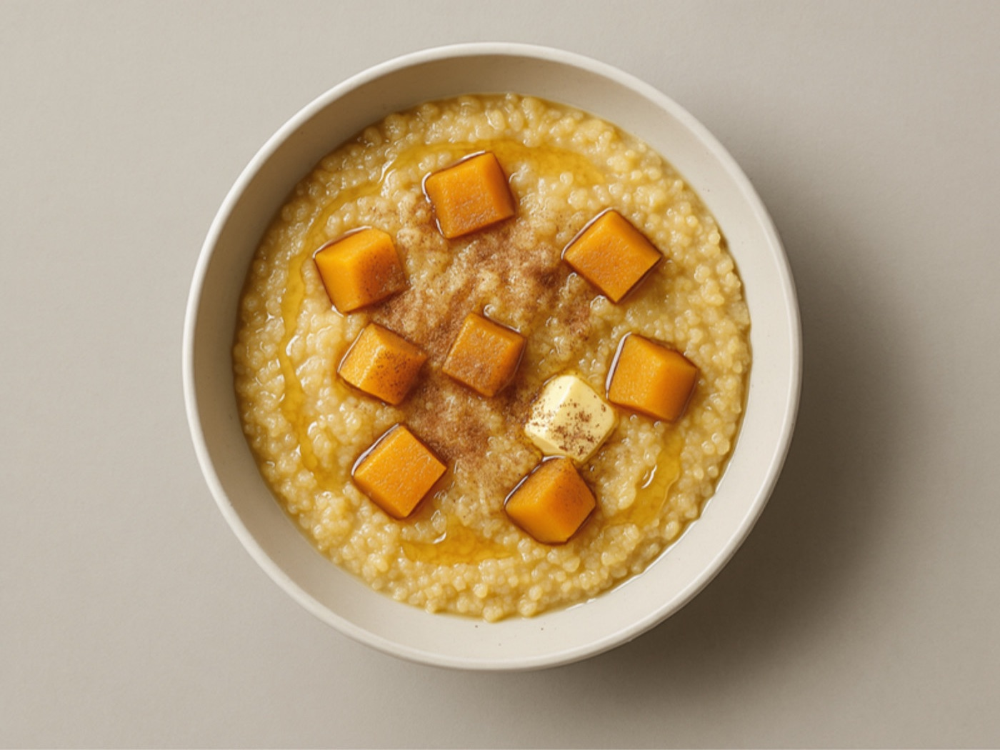
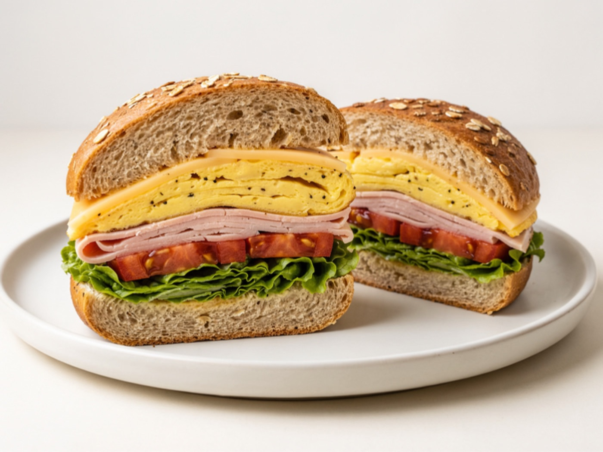
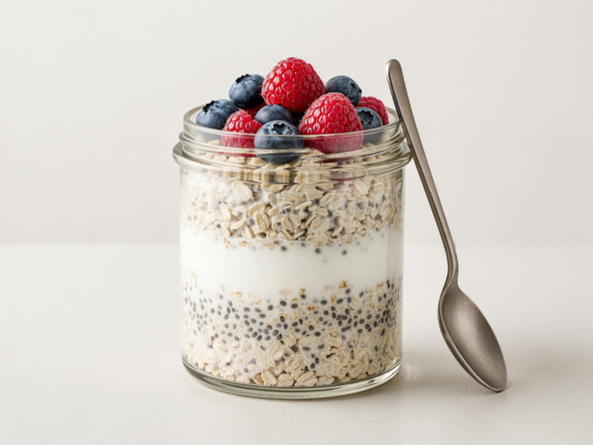
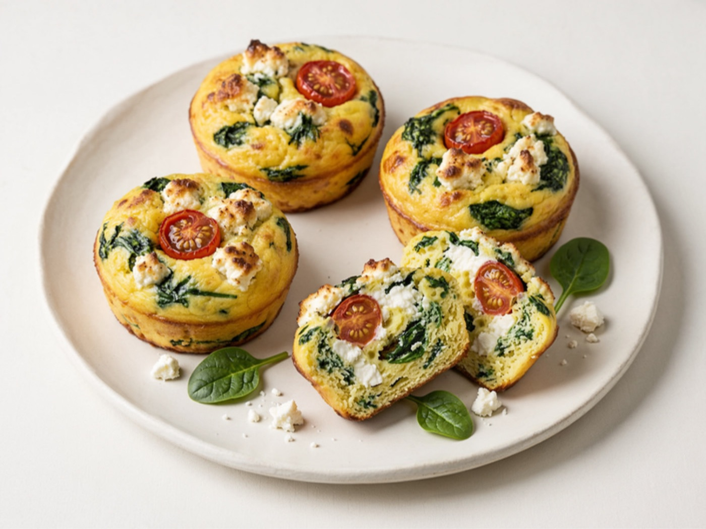

№ 1–20
Сніданки
каші, яйця, млинці
✓ 2 рецепти розділу відкриті безкоштовно · 🔒 решта — за підпискою 150 грн/міс (фото й КБЖВ — для всіх)
20 з 20

Сніданки · № 001★
Омлет із зеленню

Сніданки · № 002★
Сирники

Сніданки · № 003★
Вівсянка з яблуком і корицею

Сніданки · № 004★
Шакшука

Сніданки · № 005★
Пухкі панкейки

Сніданки · № 006★
Тост з авокадо і яйцем пашот

Сніданки · № 007★
Домашня гранола

Сніданки · № 008★
Сирна запіканка

Сніданки · № 009★
Гречка з грибами і яйцем

Сніданки · № 010★
Французькі тости

Сніданки · № 011★
Смузі-боул з бананом і ягодами

Сніданки · № 012★
Овочева фрітата

Сніданки · № 013★
Тонкі млинці

Сніданки · № 014★
Скрембл з лососем на тості

Сніданки · № 015★
Чіа-пудинг з манго

Сніданки · № 016★
Оладки на кефірі

Сніданки · № 017★
Пшоняна каша з гарбузом

Сніданки · № 018★
Сендвіч з яйцем і сиром

Сніданки · № 019★
Лінива вівсянка в банці

Сніданки · № 020★